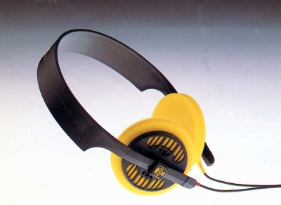

HD-410SL

■価格 12,000円■型式 ダイナミック型オープンエアタイプ■振動板 ■インピーダンス 50Ω■再生周波数帯域 20-18,000Hz■許容入力 100mW■感度 94ｄB■コード 3ｍ■重量 82g（コード含まず）■発売 1984年10月■販売終了 1987〜88年頃■備考 「SL」はスリムラインの意味 （410→410SLの変更点） カプセルの大型化・背面スリット幅の拡大 ヘッドバンド形状の変更
ゼンハイザーのインデックスへ